おじいちゃん、
解約の電話は、
もうしなくていい。
申し込む
iPhone

動画で見るガードネット
ブロックから
01
申し込む手前で、何重にもブロック
見守り
- 広告のページ
- ページからの
電話 - カート
- 申し込みボタン
02
病院や役所のページは表示可能
見るだけの
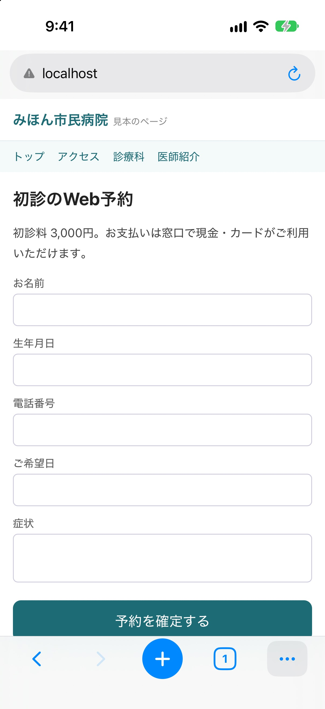
03
ブロックの通知と、ページのプレビュー
見た
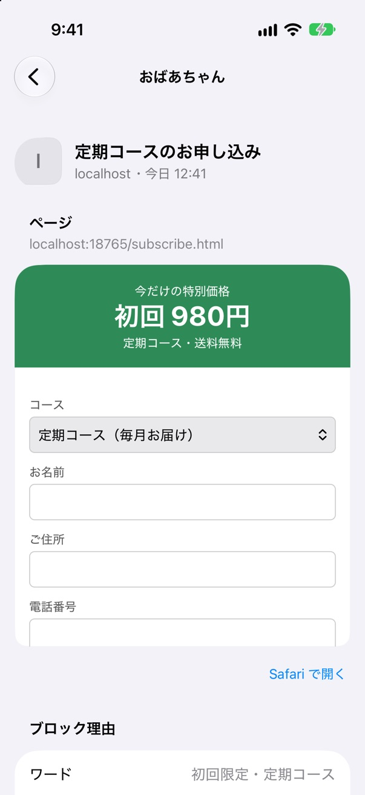
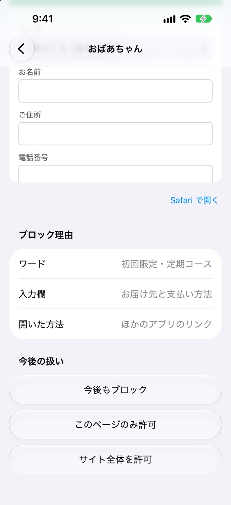
04
ブロック対象を、細かく設定可能
設定を
ブロック履歴
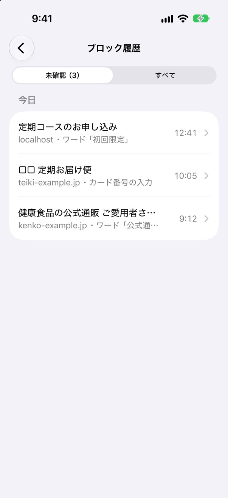
ブロック対象
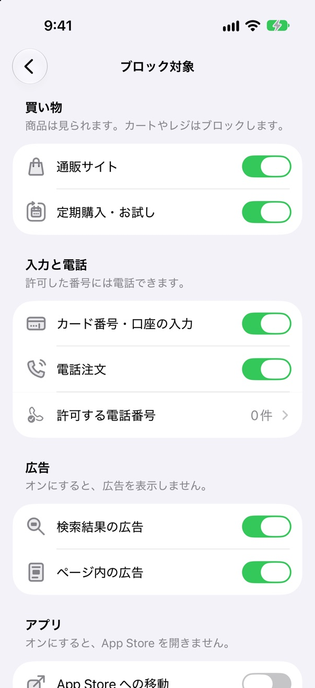
ブロックワード
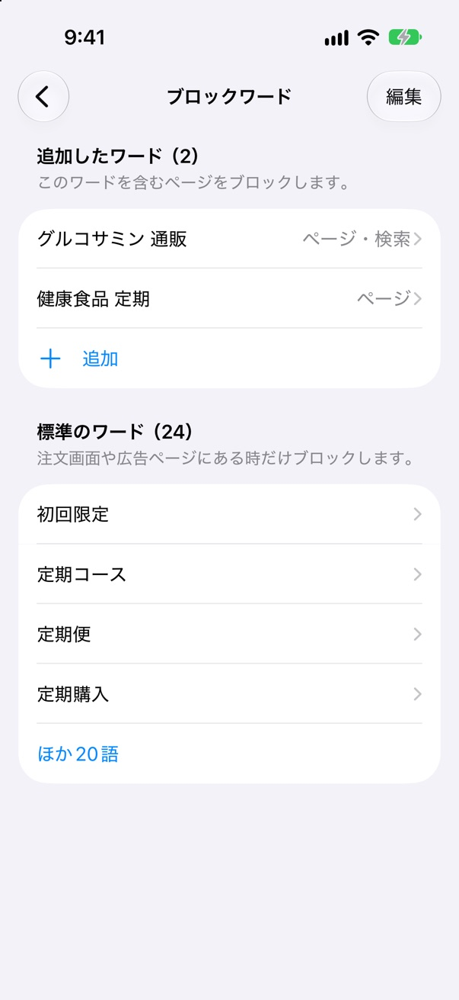
ブロックサイト
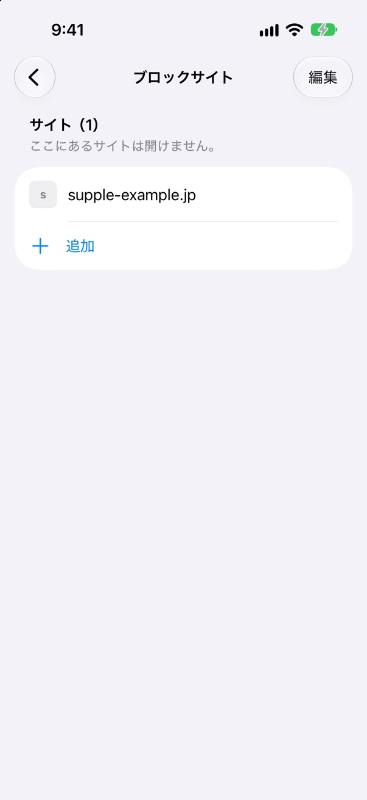
ページの
許可 グループ
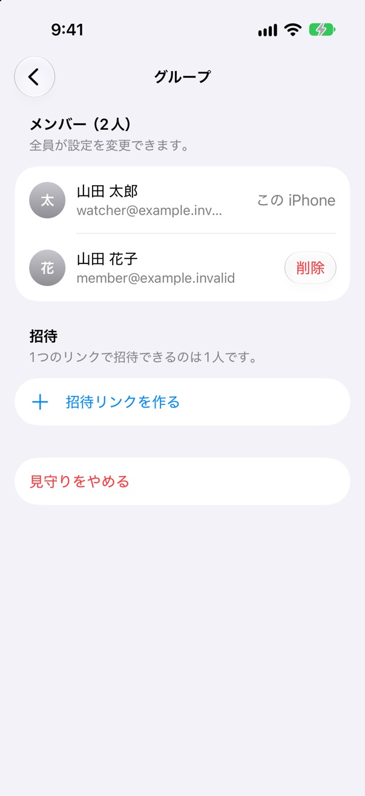
05
QR を読み取るだけで連携完了
パスワードも、
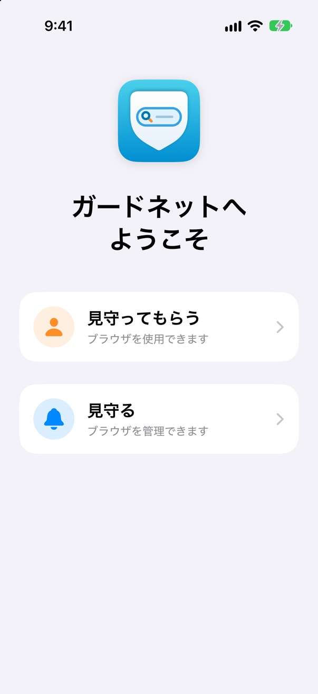
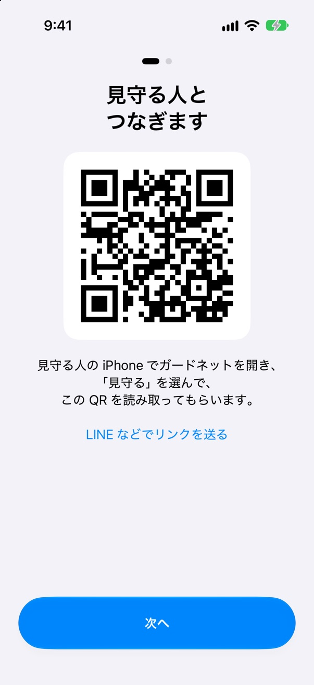
06
偽のウイルス警告もブロック
「ウイルスに
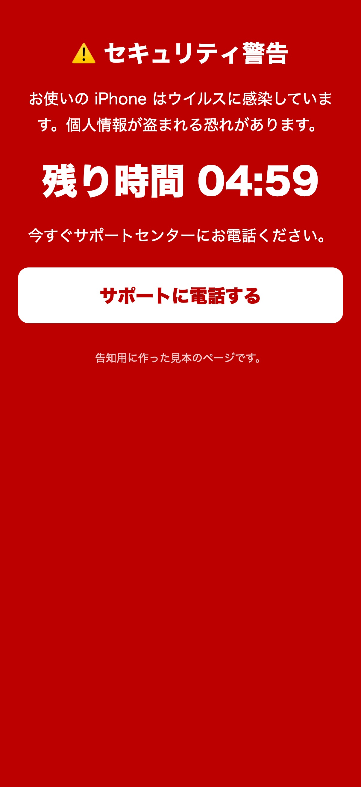
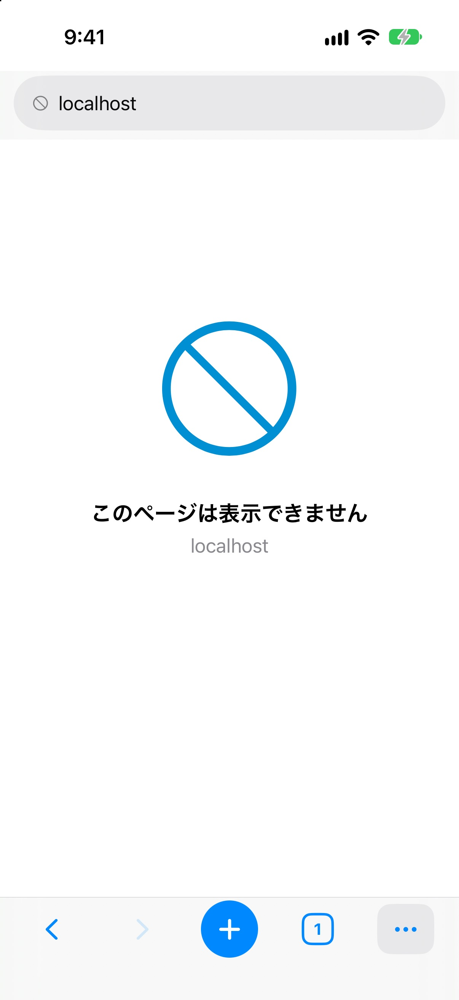
ほかにも
開発者へのデータ送信なし
記録は
見守られる 人の iCloud に 保存します。 開発者は 読めません。 広告ブロックは無料
見守り
プランに 入らなくても 使えます。 YouTube などのアプリへの移動なし
リンクを
押しても、 YouTube などの アプリは 開きません。 電話・ メール・LINE などは 開きます。
ブロックと見守りは、
月額390円
月額390円
無料版
無料
- 広告ブロック
- ブラウザ利用
見守り
月額 390円年額 3,900円
- 申し込む手前の
ブロック （カート・ 電話など） - ブロック通知
- 5つの
機能 （ブロック履歴・ブロック対象・ブロックワード・許可サイト・ブロックサイト）
1人が
期間が
ご注意
- ガードネットの
中で 開いた ページだけを 守ります。 Safari など ほかの ブラウザで 開いた ページは 守れません。 最初の 設定で、 Safari を オフに する 手順を 案内します。 - すべての
罠を 止められるわけではありません。